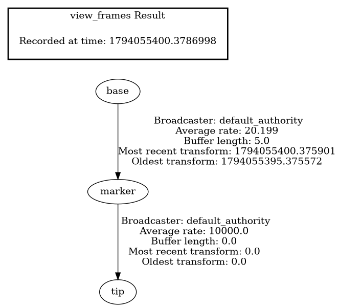
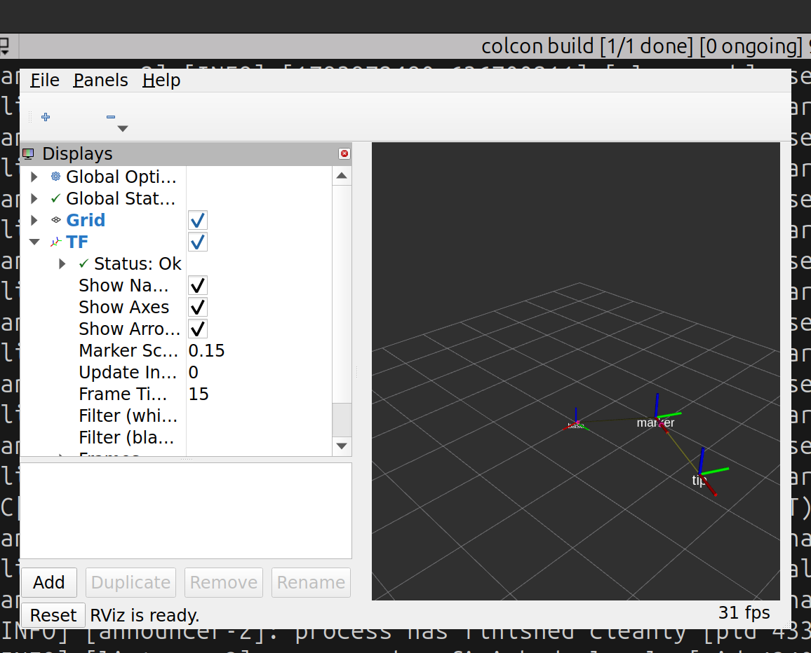
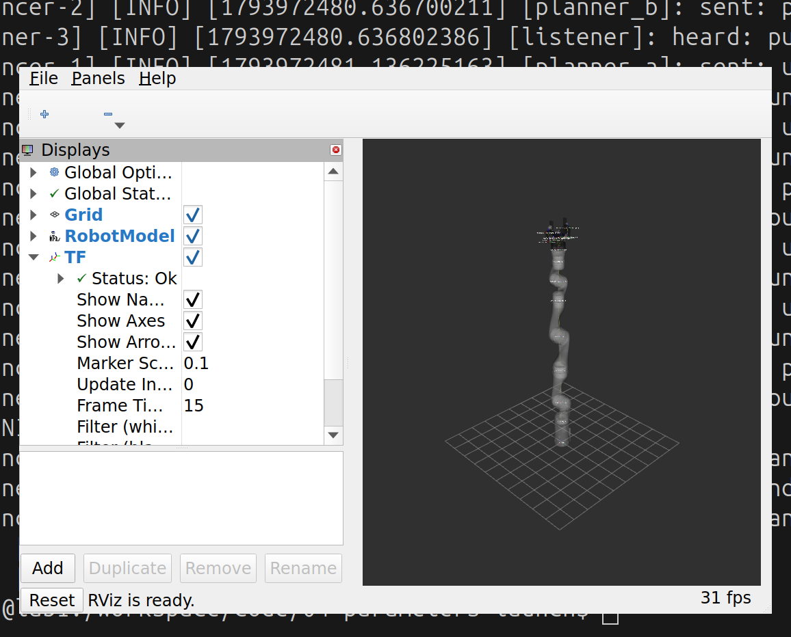

A6 · Frames and TF2
Learn how a robot system says where things are: coordinate frames, the transforms between them, and how to publish, read and look at them. Then see the same machinery at work in the Kinova arm.
1. Goal
Every question a robot asks is about position. Where is the gripper? Where is the cup? Where is the cup relative to the gripper? Each answer needs a point of view, and ROS 2 keeps all of them in one system called TF2. From this lesson on you will meet it everywhere: in RViz, in the arm's description, in MoveIt and in Gazebo.
At the end of this lesson you will have:
- seen what a frame and a transform are, and why frames form a tree,
- published a static frame from the command line, and a moving frame from a node you read,
- asked TF for the position of one frame as seen from another, with the command line and with a node,
- looked at the tree with
view_framesand at the frames in RViz, - seen the frames of the Kinova arm, and where they come from.
2. Concepts
Frame
A frame (or coordinate frame) is a point of view: an origin and three axes, x, y, z, fixed to something. The base of the arm has a frame, so has each link, the gripper, a camera, the table. A position such as "x = 0.3, y = 0.1, z = 0.2" means nothing until you say in which frame. ROS 2 uses these rules (REP 103), and so does RViz:
- distances are in metres and angles in radians,
- the frame is right-handed: x points forward, y left, z up,
- RViz draws the axes as red = x, green = y, blue = z (the order of R, G, B).
Transform
A transform says where one frame is, as seen from another. It has two parts:
- a translation: three numbers (x, y, z), the position of the child's origin in the parent, in metres,
- a rotation: how the child's axes are turned relative to the parent's, written as a quaternion, four numbers (x, y, z, w). You do not need quaternion theory yet (B2 has it). Two cases are enough for now: no rotation is (0, 0, 0, 1), and a turn about the z axis by an angle θ is (0, 0, sin(θ/2), cos(θ/2)). For example θ = 90° = π/2 gives (0, 0, 0.707, 0.707).
The message type is geometry_msgs/TransformStamped: a transform, plus a header with a time stamp and the name of the parent frame (header.frame_id), plus the name of the child frame (child_frame_id). Read it as: "at this time, the child is at this pose in the parent".
The tree
Each frame has exactly one parent (except the root, which has none), so all frames of a robot form a tree. A tree is enough to answer any question. To find frame C in frame A, TF walks the tree from A to C and combines the transforms along the way. In this lesson:
base ──► marker ──► tip
moving fixed (0.1 m ahead of marker)
If marker is at (0.3, 0, 0.2) in base and tip is 0.1 m ahead of marker, with no rotation anywhere, then tip is at (0.4, 0, 0.2) in base: the translations add up. When marker is turned, "0.1 m ahead" points in another direction, and the sum has to turn the 0.1 with it. You will check that with numbers in step 2. TF does this arithmetic for you, in both directions: asking for base as seen from tip is just as easy.
Two topics: /tf and /tf_static
Frames are shared over two topics of type tf2_msgs/TFMessage (a list of TransformStamped):
| Topic | For | Sent |
|---|---|---|
/tf | frames that move, such as the links of an arm | over and over, many times a second |
/tf_static | frames that never move relative to their parent, such as a camera bolted to the base | once. It uses the "transient local" QoS from A1, so a program that starts later still receives it |
A broadcaster publishes on these topics. A listener subscribes to both and stores what it hears in a buffer, a few seconds of history. A lookup asks the buffer: "where is tip in base, at this time?". You will use both in the nodes below. A frame exists only while someone publishes it.
3. Do it
All commands run in a container shellterminal set up for ROS 2 (A0, step 5), in the ros2-tutorial folder. You need four of them in this lesson, each one in its own terminal window: call them T1 to T4. Choose your language with the Python / C++ switch at the top right: it changes the programs you build and run, not the tools of ROS 2 itself.
-
Publish a static frame from the command line
The first frame is a fixed one, so there is nothing to write:
tf2_roshas a ready-made program for it.host T1: open a terminal in the
ros2-tutorialfolder and enter a container:docker/run_ros2.shhost T1: open a terminal in the
ros2-tutorialfolder.container Publish a frame called
tip, 0.1 m ahead (along x) of a frame calledmarker:ros2 run tf2_ros static_transform_publisher --x 0.1 --frame-id marker --child-frame-id tip[INFO] [1794055385.197557703] [static_transform_publisher_Umbk3XNYKEWXMCkM]: Spinning until stopped - publishing transform translation: ('0.100000', '0.000000', '0.000000') rotation: ('0.000000', '0.000000', '0.000000', '1.000000') from 'marker' to 'tip'The options not given (
--y,--z,--roll,--pitch,--yaw) are zero, and the rotation printed is the "no rotation" quaternion (0, 0, 0, 1). Leave it running.host T2: open a second terminal and enter a container:
docker/run_ros2.shhost T2: open a second terminal in the
ros2-tutorialfolder.container Ask TF where
tipis, as seen frommarker.tf2_echotakes the source frame (the point of view) and then the frame you want to locate:ros2 run tf2_ros tf2_echo marker tip[INFO] [1794055400.641787852] [tf2_echo]: Waiting for transform marker -> tip: Invalid frame ID "marker" passed to canTransform argument target_frame - frame does not exist At time 0.0 - Translation: [0.100, 0.000, 0.000] - Rotation: in Quaternion (xyzw) [0.000, 0.000, 0.000, 1.000] - Rotation: in RPY (radian) [0.000, -0.000, 0.000] - Rotation: in RPY (degree) [0.000, -0.000, 0.000] - Matrix: 1.000 0.000 0.000 0.100 0.000 1.000 0.000 0.000 0.000 0.000 1.000 0.000 0.000 0.000 0.000 1.000
The first line is normal: the listener has just started and has not yet received anything. Then the same numbers come back, in three forms: the quaternion, the same rotation as roll-pitch-yaw angles (easier to read: radians and degrees), and as a 4×4 matrix. The time is 0.0, which is how TF marks a transform that never changes. It repeats every second: stop it with Ctrl+C.
Now ask for something that does not exist yet.
baseis not published by anyone, so there is no path from it totip:ros2 run tf2_ros tf2_echo base tip[INFO] [1794055402.734719476] [tf2_echo]: Waiting for transform base -> tip: Invalid frame ID "base" passed to canTransform argument target_frame - frame does not exist [INFO] [1794055403.734719476] [tf2_echo]: Waiting for transform base -> tip: Invalid frame ID "base" passed to canTransform argument target_frame - frame does not exist
It waits and keeps complaining, until you press Ctrl+C. This is what a broken tree looks like. Read the message: it names the first frame that is missing. Here it is
base. If it namestipinstead, T1 is not running (or runs with anotherROS_DOMAIN_ID): check T1. Stop programs with Ctrl+C, not Ctrl+Z, which only suspends a program. Also look at the message that carries the static frame:ros2 topic echo /tf_static --oncetransforms: - header: stamp: sec: 1794055385 nanosec: 195882567 frame_id: marker child_frame_id: tip transform: translation: x: 0.1 y: 0.0 z: 0.0 rotation: x: 0.0 y: 0.0 z: 0.0 w: 1.0 ---That is a
TransformStampedinside a list: parentmarkerinframe_id, childtipinchild_frame_id, a translation and a quaternion. This message was sent once, when T1 started, and you received it now because/tf_statickeeps its last message for late joiners. -
Broadcast a moving frame
Now the moving part of the tree: a frame
markerthat circles aroundbaseat 0.3 m from it and 0.2 m above it, at 0.5 rad/s (about one turn in 12.6 s). This is the program,orbit. It builds aTransformStampedevery 50 ms and sends it with a TransformBroadcaster.#!/usr/bin/env python3 """Publishes a moving frame 'marker' that circles around the frame 'base' (radius 0.3 m, 0.5 rad/s, 0.2 m up).""" import math import rclpy from geometry_msgs.msg import TransformStamped from rclpy.node import Node from tf2_ros import TransformBroadcaster class Orbit(Node): def __init__(self): super().__init__('orbit') self.broadcaster = TransformBroadcaster(self) self.start = self.get_clock().now() self.create_timer(0.05, self.on_timer) # 20 times per second def on_timer(self): now = self.get_clock().now() angle = 0.5 * (now - self.start).nanoseconds * 1e-9 # 0.5 rad/s t = TransformStamped() t.header.stamp = now.to_msg() t.header.frame_id = 'base' # parent frame t.child_frame_id = 'marker' # child frame: its pose is given in the parent t.transform.translation.x = 0.3 * math.cos(angle) t.transform.translation.y = 0.3 * math.sin(angle) t.transform.translation.z = 0.2 # rotation about z by `angle`, as a quaternion (x, y, z, w) = (0, 0, sin(angle/2), cos(angle/2)) t.transform.rotation.z = math.sin(angle / 2) t.transform.rotation.w = math.cos(angle / 2) self.broadcaster.sendTransform(t) def main(): rclpy.init() rclpy.spin(Orbit()) if __name__ == '__main__': main()// Publishes a moving frame "marker" that circles around the frame "base" (radius 0.3 m, 0.5 rad/s, 0.2 m up). #include <chrono> #include <cmath> #include <memory> #include "geometry_msgs/msg/transform_stamped.hpp" #include "rclcpp/rclcpp.hpp" #include "tf2_ros/transform_broadcaster.h" using namespace std::chrono_literals; class Orbit : public rclcpp::Node { public: Orbit() : Node("orbit") { broadcaster_ = std::make_unique<tf2_ros::TransformBroadcaster>(*this); start_ = now(); timer_ = create_wall_timer(50ms, [this]() { on_timer(); }); // 20 times per second } private: void on_timer() { const auto stamp = now(); const double angle = 0.5 * (stamp - start_).seconds(); // 0.5 rad/s geometry_msgs::msg::TransformStamped t; t.header.stamp = stamp; t.header.frame_id = "base"; // parent frame t.child_frame_id = "marker"; // child frame: its pose is given in the parent t.transform.translation.x = 0.3 * std::cos(angle); t.transform.translation.y = 0.3 * std::sin(angle); t.transform.translation.z = 0.2; // rotation about z by `angle`, as a quaternion (x, y, z, w) = (0, 0, sin(angle/2), cos(angle/2)) t.transform.rotation.z = std::sin(angle / 2); t.transform.rotation.w = std::cos(angle / 2); broadcaster_->sendTransform(t); } std::unique_ptr<tf2_ros::TransformBroadcaster> broadcaster_; rclcpp::Time start_; rclcpp::TimerBase::SharedPtr timer_; }; int main(int argc, char ** argv) { rclcpp::init(argc, argv); rclcpp::spin(std::make_shared<Orbit>()); rclcpp::shutdown(); return 0; }Read it with the concepts in mind:
header.frame_id = 'base'is the parent andchild_frame_id = 'marker'the child: the message says wheremarkeris, inbase.- The position is a circle: x = 0.3 cos(a), y = 0.3 sin(a), with the angle a = 0.5 · t growing with the time t since the start, and a fixed height z = 0.2.
- The orientation turns with the position: a rotation about z by a is the quaternion (0, 0, sin(a/2), cos(a/2)), as in the concepts. So the x axis of
markeralways points away frombase. - The time stamp is the current time. Listeners use it to say "where was it then".
The package is
code/06-frames:package.xmlandCMakeLists.txtas in A4 (they now also needtf2_rosandgeometry_msgs). Build it and runorbit:host T3: open a terminal in the
ros2-tutorialfolder and enter a container:docker/run_ros2.shhost T3: open a terminal in the
ros2-tutorialfolder.container
cd code/06-frames colcon build source install/setup.bashros2 run a6_frames orbit.pyros2 run a6_frames orbitThe program prints nothing. It publishes. In T2, look at the topic:
ros2 topic echo /tf --once ros2 topic hz /tftransforms: - header: stamp: sec: 1794055390 nanosec: 725629042 frame_id: base child_frame_id: marker transform: translation: x: -0.031238105869757317 y: 0.298369202066282 z: 0.2 rotation: x: 0.0 y: 0.0 z: 0.7430097642581347 w: 0.6692805766022731 --- average rate: 19.997 min: 0.050s max: 0.050s std dev: 0.00025s window: 2220 messages a second, one every 50 ms, as in the timer. (Stop
hzwith Ctrl+C.) The numbers fit the formulas: the position is on the circle, (−0.031)² + 0.298² = 0.09 = 0.3², and the rotation is sin(a/2) = 0.743, cos(a/2) = 0.669, so a/2 = 0.84 and the angle is a = 1.68 rad, which is 96°:markeris a little past the y axis. Your numbers will differ: they depend on when you ask.The tree is now complete,
base → marker → tip, so the question that failed before has an answer. Ask again, from T2:ros2 run tf2_ros tf2_echo base tipAt time 1794055011.281557794 - Translation: [-0.388, 0.096, 0.200] - Rotation: in Quaternion (xyzw) [0.000, 0.000, 0.993, 0.120] - Rotation: in RPY (radian) [0.000, -0.000, 2.900] - Rotation: in RPY (degree) [0.000, -0.000, 166.165] - Matrix: -0.971 -0.239 0.000 -0.388 0.239 -0.971 0.000 0.096 0.000 0.000 1.000 0.200 0.000 0.000 0.000 1.000 At time 1794055012.281828136 - Translation: [-0.387, -0.102, 0.200] ...
The result is the position of
tipinbase, and it moves, becausemarkerdoes. (Stop it with Ctrl+C. The first line you may see, "Waiting for transform", is the same start-up message as before.) TF has combined two transforms to give this answer, and you can check the arithmetic in step 5. -
Look at the tree:
view_framesA tree is easier to understand when you see it.
view_frameslistens to TF for five seconds and draws the tree. Run it in T2, which is in theros2-tutorialfolder, so the files appear there:ros2 run tf2_tools view_frames[INFO] [1794055395.336320897] [view_frames]: Listening to tf data for 5.0 seconds... [INFO] [1794055400.376803759] [view_frames]: Generating graph... [INFO] [1794055400.378616678] [view_frames]: Exporting graph in frames_2026-11-07_12.43.20.pdf file...
It wrote
frames_date.pdf(and a.gvtext version) in the folder. Open the PDF on your computer. This is what it contains for our tree:
The frame tree. Every arrow is one transform, from the parent to the child. 20 Hz on the first arrow is orbit; the static one shows a rate of 10000 and no history, which is how TF marks a transform that never changes.When something is wrong with your frames (a frame missing, two trees that are not connected, a frame with two parents), this picture is the first place to look.
ros2 run tf2_ros tf2_monitoris a text alternative that prints, per frame, how long the transforms take to arrive. -
See the frames in RViz
Now see them. RViz has a TF display that draws every frame as a set of axes, with its name and a thin line to its parent. Start RViz with a configuration file from this lesson that has the Grid and TF displays set up (in T4: open one more terminal as before, in the
ros2-tutorialfolder):host
docker/run_ros2.shcontainer
ros2 run rviz2 rviz2 -d code/06-frames/rviz/orbit_demo.rvizA window opens (it takes a few seconds), like the one below: three sets of axes, with the labels
base,markerandtip.markercircles aroundbaseandtipfollows it, always 0.1 m ahead ofmarkerin its x (red) direction.
RViz showing the three frames. Red is x, green is y, blue is z. markeris the middle one, 0.2 m above the grid;tipis a little further out along its red axis.Two settings in the left panel matter, and you will use them all the time:
- Global Options → Fixed Frame is the frame RViz treats as standing still, and everything is drawn relative to it. It is set to
basehere. If you set it tomarker, RViz movesbaseandtiparound a stationarymarkerinstead: same tree, another point of view. If it names a frame that does not exist, the display turns red with "Frame [...] does not exist" (the same error as in step 1). - TF has Show Names, Show Axes, Show Arrows and Marker Scale (the size of the axes). Open the Frames list at the bottom of the TF entry to switch single frames on and off.
Close RViz with its window button. Leave T1 (the static frame) and T3 (
orbit) running: the next step needs them. - Global Options → Fixed Frame is the frame RViz treats as standing still, and everything is drawn relative to it. It is set to
-
Look up a transform in code
The command-line tools answer your questions; your own nodes need the answer too, for instance "where is the cup in the gripper's frame, so I can close the fingers?". This is the job of a TransformListener and its Buffer. The program
whereasks once a second, and which frames it asks about are parameters (A4):source(defaultbase) andtarget(defaultmarker).#!/usr/bin/env python3 """Once a second, asks TF where the frame `target` is, as seen from the frame `source`, and prints it.""" import rclpy from rclpy.node import Node from rclpy.time import Time from tf2_ros import Buffer, TransformException, TransformListener class Where(Node): def __init__(self): super().__init__('where') self.declare_parameter('source', 'base') self.declare_parameter('target', 'marker') self.buffer = Buffer() self.listener = TransformListener(self.buffer, self) # fills the buffer from /tf and /tf_static self.create_timer(1.0, self.on_timer) def on_timer(self): source = self.get_parameter('source').value target = self.get_parameter('target').value try: # Time() means "the latest transform available" t = self.buffer.lookup_transform(source, target, Time()) except TransformException as e: self.get_logger().warn(f'cannot get {target} in {source}: {e}') return p = t.transform.translation self.get_logger().info(f'{target} in {source}: x={p.x:.3f} y={p.y:.3f} z={p.z:.3f}') def main(): rclpy.init() rclpy.spin(Where()) if __name__ == '__main__': main()// Once a second, asks TF where the frame `target` is, as seen from the frame `source`, and prints it. #include <chrono> #include <memory> #include <string> #include "rclcpp/rclcpp.hpp" #include "tf2/exceptions.h" #include "tf2/time.h" #include "tf2_ros/buffer.h" #include "tf2_ros/transform_listener.h" using namespace std::chrono_literals; class Where : public rclcpp::Node { public: Where() : Node("where") { declare_parameter("source", "base"); declare_parameter("target", "marker"); buffer_ = std::make_unique<tf2_ros::Buffer>(get_clock()); listener_ = std::make_unique<tf2_ros::TransformListener>(*buffer_); // fills the buffer from /tf and /tf_static timer_ = create_wall_timer(1s, [this]() { on_timer(); }); } private: void on_timer() { const std::string source = get_parameter("source").as_string(); const std::string target = get_parameter("target").as_string(); try { // tf2::TimePointZero means "the latest transform available" const auto t = buffer_->lookupTransform(source, target, tf2::TimePointZero); const auto & p = t.transform.translation; RCLCPP_INFO( get_logger(), "%s in %s: x=%.3f y=%.3f z=%.3f", target.c_str(), source.c_str(), p.x, p.y, p.z); } catch (const tf2::TransformException & e) { RCLCPP_WARN( get_logger(), "cannot get %s in %s: %s", target.c_str(), source.c_str(), e.what()); } } std::unique_ptr<tf2_ros::Buffer> buffer_; std::unique_ptr<tf2_ros::TransformListener> listener_; rclcpp::TimerBase::SharedPtr timer_; }; int main(int argc, char ** argv) { rclcpp::init(argc, argv); rclcpp::spin(std::make_shared<Where>()); rclcpp::shutdown(); return 0; }The listener fills the buffer in the background, from
/tfand/tf_static.lookup_transform(source, target, time)asks "where istarget, as seen fromsource" (the same order astf2_echo) and returns aTransformStamped. The timeTime()(tf2::TimePointZeroin C++) means "the latest one available". You may also ask for a time in the past, as long as the buffer still has it (10 s by default). A lookup can fail: the frame may not exist yet, or the two frames may not be connected. It then raises an exception (TransformException), and a robust node catches it, as this one does, and tries again.The program is already built, since it is in the same package as
orbit. Run it in T4 (source install/setup.bashincode/06-framesfirst, as in step 2) withorbitand the static frame still running:ros2 run a6_frames where.pyros2 run a6_frames where[INFO] [1794055006.490649143] [where]: marker in base: x=0.267 y=0.137 z=0.200 [INFO] [1794055007.482069651] [where]: marker in base: x=0.168 y=0.248 z=0.200 [INFO] [1794055008.482009705] [where]: marker in base: x=0.029 y=0.299 z=0.200 [INFO] [1794055009.482012157] [where]: marker in base: x=-0.118 y=0.276 z=0.200
[INFO] [1794055015.391332438] [where]: marker in base: x=0.071 y=-0.292 z=0.200 [INFO] [1794055016.391330367] [where]: marker in base: x=0.202 y=-0.222 z=0.200 [INFO] [1794055017.391301847] [where]: marker in base: x=0.284 y=-0.098 z=0.200 [INFO] [1794055018.391401782] [where]: marker in base: x=0.296 y=0.050 z=0.200
Each second the point is a little further around the circle (0.5 rad is about 29°, in the right direction). Stop it, then ask about the other frame by setting the
targetparameter, as in A4:ros2 run a6_frames where.py --ros-args -p target:=tipros2 run a6_frames where --ros-args -p target:=tip[INFO] [1794055006.491082377] [where]: tip in base: x=0.356 y=0.183 z=0.200 [INFO] [1794055007.482070953] [where]: tip in base: x=0.224 y=0.331 z=0.200 [INFO] [1794055008.481984036] [where]: tip in base: x=0.038 y=0.398 z=0.200
That is the chain at work:
tipis two transforms away frombase, and one lookup gives the answer. Check it by hand with two lines recorded at the same instant (when we ran both programs side by side, your numbers will differ):markerwas at x = 0.267, y = 0.137 andtipat x = 0.356, y = 0.183. The angle ofmarkeris a = atan2(0.137, 0.267) = 0.474 rad.tipis 0.1 m along the x axis ofmarker, which points in the direction a, sotip x = 0.267 + 0.1 · cos(0.474) = 0.267 + 0.089 = 0.356 tip y = 0.137 + 0.1 · sin(0.474) = 0.137 + 0.046 = 0.183
It matches: TF turned the 0.1 m offset with the rotation of
markerand added it to the position ofmarker. No node of yours does this arithmetic. Finally ask for a frame nobody publishes:ros2 run a6_frames where.py --ros-args -p target:=nothingros2 run a6_frames where --ros-args -p target:=nothing[WARN] [1794055006.490694118] [where]: cannot get nothing in base: "nothing" passed to lookupTransform argument source_frame does not exist.
A warning, once a second, and no crash: the exception was caught. (The wording says source_frame for the frame you asked for: that is how the TF2 library names its arguments, the opposite of
tf2_echo. Do not let it confuse you.) Stop the program with Ctrl+C, and stoporbitand the static publisher in T3 and T1 too. -
The frames of the Kinova arm
The arm is a tree of frames too, one per link, and it is published for you. Start the description of the arm, which you have used before, in T1 (with the gripper, as in the plan of the course):
ros2 launch kortex_description view_robot.launch.py gripper:=robotiq_2f_85Two windows open: RViz with the arm, and a small window of joint sliders (
joint_state_publisher_gui). In a second terminal (T2) look at what is running and at the topics:ros2 node list ros2 topic info /joint_states ros2 topic info /tf/joint_state_publisher_gui /robot_state_publisher /rviz2 /transform_listener_impl_647c937b3f50 Type: sensor_msgs/msg/JointState Publisher count: 1 Subscription count: 1 Type: tf2_msgs/msg/TFMessage Publisher count: 1 Subscription count: 1
Four things are going on, and they are the same in every robot you will meet:
joint_state_publisher_guipublishes/joint_states(typesensor_msgs/JointState): the angle of every joint, a list of names and numbers. The sliders set them. On the real arm, the driver publishes the same topic with the measured angles; withros2_control(A7) it is the same again.robot_state_publisherholds the arm's description (the URDF, a file that lists every link and joint and which link each is attached to; B1 reads it) and subscribes to/joint_states. Every joint of the description becomes one edge of the tree: a transform from the parent link to the child link, rotated by the joint angle. It publishes them on/tf.- Joints that cannot move (the base mount, the gripper's fixed parts) never change, so they go out once on
/tf_static. - RViz is only a listener: its RobotModel and TF displays read
/tf, exactly like yourwherenode does.
The RViz window of this launch shows the robot model only. To see the frames too, click Add in the Displays panel, choose TF in the list and press OK. Then enlarge the arrows with Marker Scale if they are too small. This is the arm with the TF display on (we used the configuration file
code/06-frames/rviz/arm_frames.rviz, which has the model, semi-transparent, and the TF display already set up):
The arm with every joint at zero. Each link has its own frame; all of them together are the tree that robot_state_publisherpublishes.So the arm in RViz is nothing more than TF drawn with shapes. Ask TF about the hand. The last link has the frame
end_effector_link, and the root, the arm's mounting point, isbase_link(it hangs from a frame calledworld). In T2:ros2 run tf2_ros tf2_echo base_link end_effector_linkAt time 1794055450.878703121 - Translation: [-0.000, -0.025, 1.187] - Rotation: in Quaternion (xyzw) [0.000, -0.000, 0.000, 1.000] - Rotation: in RPY (radian) [0.000, -0.000, 0.000] - Rotation: in RPY (degree) [0.000, -0.000, 0.000] - Matrix: 1.000 -0.000 -0.000 -0.000 0.000 1.000 -0.000 -0.025 0.000 0.000 1.000 1.187 0.000 0.000 0.000 1.000
With every joint at 0 the arm stands straight up: the hand is 1.187 m above the base, and 0.025 m to the side because of the offsets of the links. Now move a slider in the joint window (try
joint_2) whiletf2_echoruns: the numbers change as the arm moves in RViz. This is the whole idea of forward kinematics, finding the pose of the hand from the joint angles, and TF does it for you here. In B2 you will do it by hand.Your own program can ask the same question. Stop
tf2_echoand runwherein T3 (incode/06-frames, sourced as in step 2), moving the sliders as before:ros2 run a6_frames where.py --ros-args -p source:=base_link -p target:=end_effector_linkros2 run a6_frames where --ros-args -p source:=base_link -p target:=end_effector_link[INFO] [1794055715.395731413] [where]: end_effector_link in base_link: x=-0.000 y=-0.025 z=1.187 [INFO] [1794055716.388264846] [where]: end_effector_link in base_link: x=-0.000 y=-0.025 z=1.187
(The two lines are the zero position, as printed before the sliders were touched.) Close the windows and stop everything with Ctrl+C.
The real arm, the same way The real arm's driver publishes/joint_statestoo, and the samerobot_state_publisherturns it into frames. So everything in this step,tf2_echo, RViz, yourwherenode, works the same on the real arm and on the digital twin: that is the point of the course.
4. Check
You are done when:
- with
orbitand the static publisher running,tf2_echo base tipprints a position that changes, andview_framesdrawsbase → marker → tip, - RViz shows the three labelled frames moving,
whereprintsmarker in base,tip in baseand, fortarget:=nothing, a warning without a crash,tf2_echo base_link end_effector_linkchanges when you move a slider of the arm.
5. Exercise
Add a frame called top that sits 0.1 m above tip (along z), with another static_transform_publisher. Before you run anything, predict: with orbit running, what are x, y and z of top in base, compared with those of tip? Then check it with where.
Answer
Start it (with orbit and the first static frame running):
ros2 run tf2_ros static_transform_publisher --z 0.1 --frame-id tip --child-frame-id topros2 run a6_frames where.py --ros-args -p target:=topros2 run a6_frames where --ros-args -p target:=top[INFO] [1794055700.395448385] [where]: top in base: x=0.356 y=0.183 z=0.300 [INFO] [1794055701.387949930] [where]: top in base: x=0.224 y=0.331 z=0.300 [INFO] [1794055702.387859224] [where]: top in base: x=0.038 y=0.398 z=0.300
x and y are the same as for tip (compare the first line with the tip output above: 0.356, 0.183), and z is 0.3 = 0.2 + 0.1. The offset is along z, and the rotation of marker is about z, so turning does not change an offset along z: it only moves it around the circle. The tree is now base → marker → tip → top. (We ran this with the Python where.)
6. Recap
- A frame is a point of view (origin and axes). Positions only mean something in a frame. ROS 2: metres, radians, x forward, y left, z up; RViz draws x, y, z as red, green, blue.
- A transform is a translation (x, y, z) and a rotation (a quaternion (x, y, z, w); no rotation is (0, 0, 0, 1), a turn about z by θ is (0, 0, sin(θ/2), cos(θ/2))). It is sent as a
TransformStamped: parent inheader.frame_id, child inchild_frame_id. - Frames form a tree, one parent each. TF combines the transforms along the path, in either direction. A frame exists only while someone publishes it.
/tfcarries frames that move,/tf_staticframes that do not (sent once, kept for late joiners).static_transform_publishermakes a fixed frame from the command line; aTransformBroadcasterin a node makes a moving one.- A
TransformListenerfills aBuffer;lookup_transform(source, target, time)answers "where istargetinsource", and can fail (catch the exception).tf2_echo source targetasks the same from the command line. view_framesdraws the tree; RViz's TF display shows the frames; Fixed Frame is the point of view of the picture.- The arm's frames come from
robot_state_publisher:/joint_states+ the description in,/tfand/tf_staticout. The same works for the real arm.